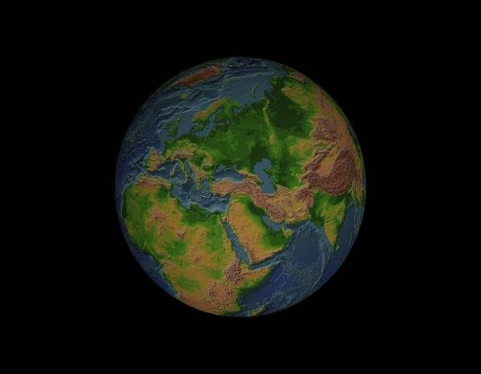
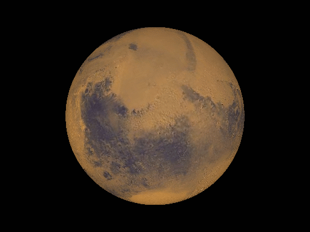
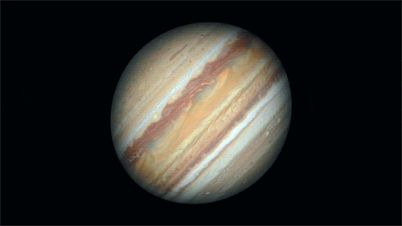
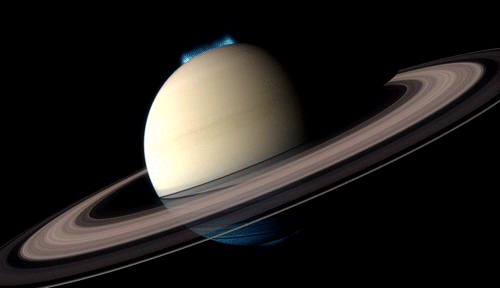
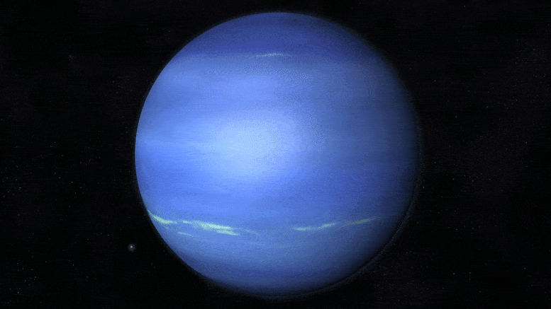
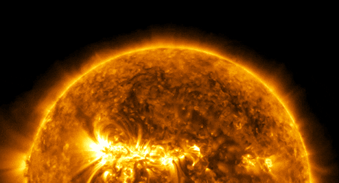

Mercury

Size: 4,880 kilometers
Fun Fact: Mercury is the closest planet to the Sun.
Venus

Size: 12,104 kilometers
Fun Fact: Venus is the hottest planet in our solar system.
Earth
Size: 12,742 kilometers
Fun Fact: Earth is the only planet known to support life.
Mars
Size: 6,779 kilometers
Fun Fact: Mars has the tallest volcano and the deepest canyon in the solar system.
Jupiter
Size: 139,820 kilometers
Fun Fact: Jupiter has the largest moon in the solar system, Ganymede.
Saturn
Size: 116,460 kilometers
Fun Fact: Saturn's rings are made mostly of ice particles with some rocks and dust.
Uranus

Size: 50,724 kilometers
Fun Fact: Uranus is the coldest planet in the solar system.
Neptune
Size: 49,244 kilometers
Fun Fact: Neptune's winds are the fastest in the solar system, reaching speeds of 1,500 miles per hour.
Sun
Size: 1,391,000 kilometers
Fun Fact: The Sun contains about 99.8% of the total mass of the entire solar system.